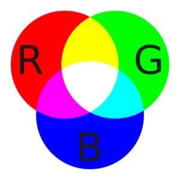
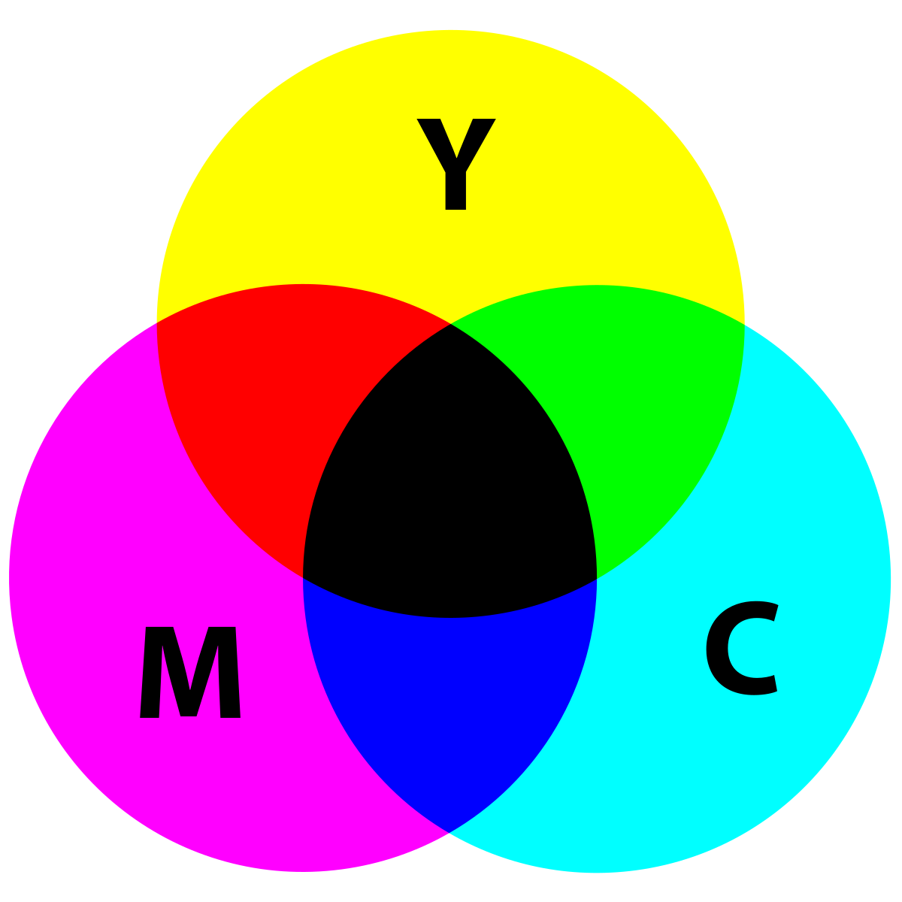
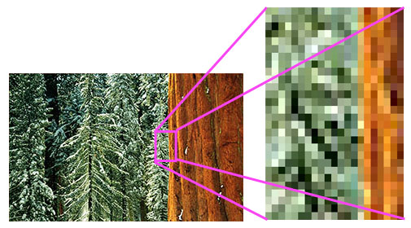

Met behulp van kleurmodellen kunt u precies de kleur weergeven die u voor ogen heeft. Er zijn immers veel verschillende tinten blauw, rood of groen. In beide kleurmodellen heeft elke kleur zijn eigen code. CMYK en RGB zijn de twee belangrijkste kleurmodellen die we tegenwoordig gebruiken.
RGB staat voor: rood, groen en blauw. Dit zijn de drie primaire kleuren. Als je deze drie kleuren combineert, krijg je wit. Dit heet een additieve kleurmening. RGB-model wordt gebruikt voor bronnen die licht geven. Denk hierbij aan: beeldschermen van televisies, computers, telefoons, tablets enzovoort. Als je op een van de beeldeschermen flink inzoomt, krijg je de drie kleuren te zien "rood,groen en blauw" als kleine puntjes.
CMYK staat voor: Cyaan, Magenta, Yellow en Key. Met Key wordt de kleur zwart bedoeld. Key wordt gebruikt om verwarring te voorkomen met de B van Blue of Black. Het CMYK-model komt voort uit het RGB-model. Als twee kleuren van het RGB-model elkaar overlappen dan ontstaan de kleuren: Cyaan, Magenta en Yellow. In het midden van het CMYK-model ontstaat er zwart. In tegenstelling tot het RGB-model is het CMYK-model een subtractieve kleurmening, het model absorbeert licht. Daarom ontstaat er in het midden de kleur zwart.
Een pixel is de kleinste eenheid van een digitale afbeelding of afbeelding die kan worden weergegeven en weergegeven op een digitaal weergaveapparaat. Een pixel is de logische basiseenheid in digitale afbeeldingen. Pixels worden gecombineerd om een compleet beeld, video, tekst of iets zichtbaars op een computerscherm te vormen. Het woord "pixel" betekent een afbeeldingselement. Elke foto, in digitale vorm, is opgebouwd uit pixels. Ze zijn de kleinste eenheid van informatie waaruit een afbeelding bestaat. Meestal rond of vierkant, zijn ze meestal gerangschikt in een 2-dimensionaal raster. In de onderstaande afbeelding is een gedeelte vele malen vergroot, zodat u de individuele compositie in pixels kunt zien. Zoals u kunt zien, benaderen de pixels de werkelijke afbeelding. Hoe meer pixels je hebt, hoe meer de afbeelding op het origineel lijkt.
